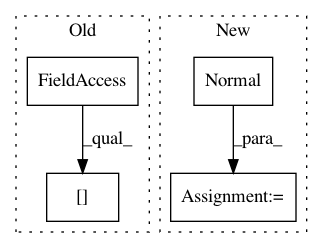

96d0eebd5f75592deb850b8af84af2af9a8ae677,pymc3/examples/custom_dists.py,,,#,101
Before Change
plot_MCMC_trace(ax[0], xdata, ydata, trace, True, colors=colors)
plot_MCMC_model(ax[1], xdata, ydata, trace)
pymc3_trace = [trace["intercept"],
trace["slope"],
trace["sigma"]]
After Change
return -tt.log(tt.abs_(value))
with pm.Model() as model:
alpha = pm.Normal("intercept", mu=0, sd=100)
// Create custom densities
beta = pm.DensityDist("slope", loglike1, testval=0)
sigma = pm.DensityDist("sigma", loglike2, testval=1)
// Create likelihood
like = pm.Normal("y_est", mu=alpha + beta *
xdata, sd=sigma, observed=ydata)
trace = pm.sample(2000, njobs=2)
In pattern: SUPERPATTERN
Frequency: 3
Non-data size: 4
Instances
Project Name: pymc-devs/pymc3
Commit Name: 96d0eebd5f75592deb850b8af84af2af9a8ae677
Time: 2017-06-01
Author: junpeng.lao@unifr.ch
File Name: pymc3/examples/custom_dists.py
Class Name:
Method Name:
Project Name: cornellius-gp/gpytorch
Commit Name: cbfd111192d2b1ed7a43ebfac3178d31b844b4cd
Time: 2019-03-26
Author: gpleiss@gmail.com
File Name: gpytorch/models/pyro_variational_gp.py
Class Name: PyroVariationalGP
Method Name: model
Project Name: cornellius-gp/gpytorch
Commit Name: f73f721fda3b3d812fb5bcd491138fc03448a8ff
Time: 2019-11-10
Author: gpleiss@gmail.com
File Name: gpytorch/models/pyro/pyro_gp.py
Class Name: PyroGP
Method Name: model